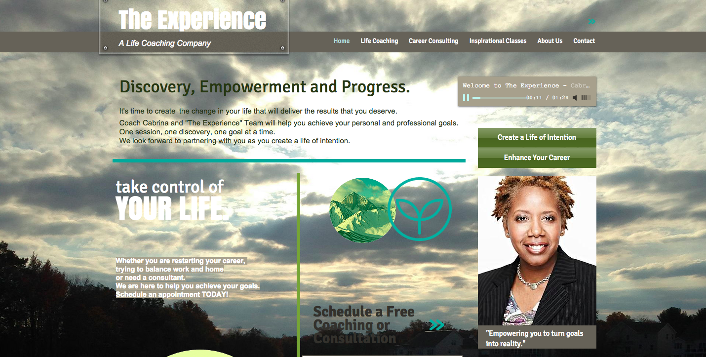
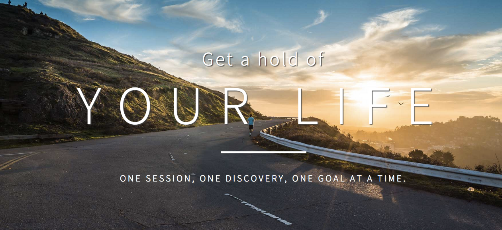
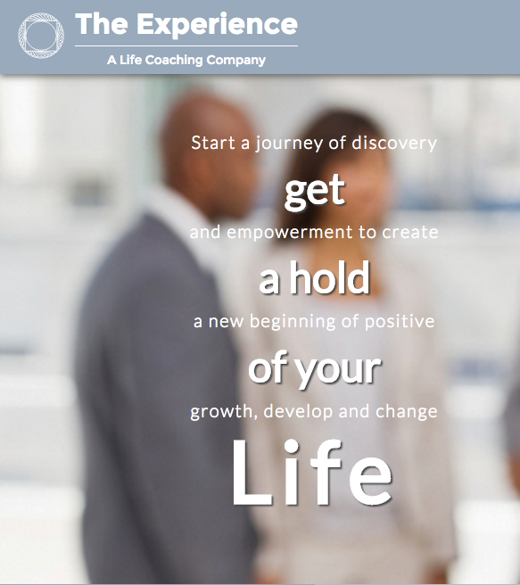
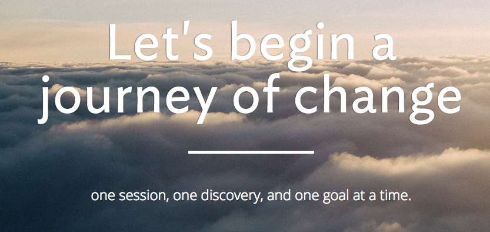
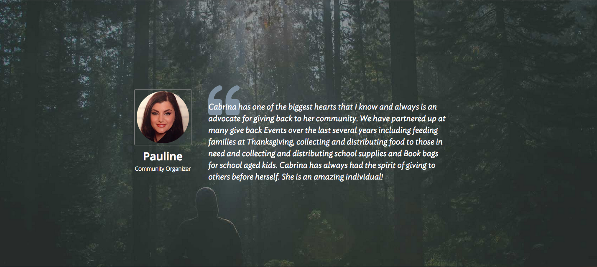
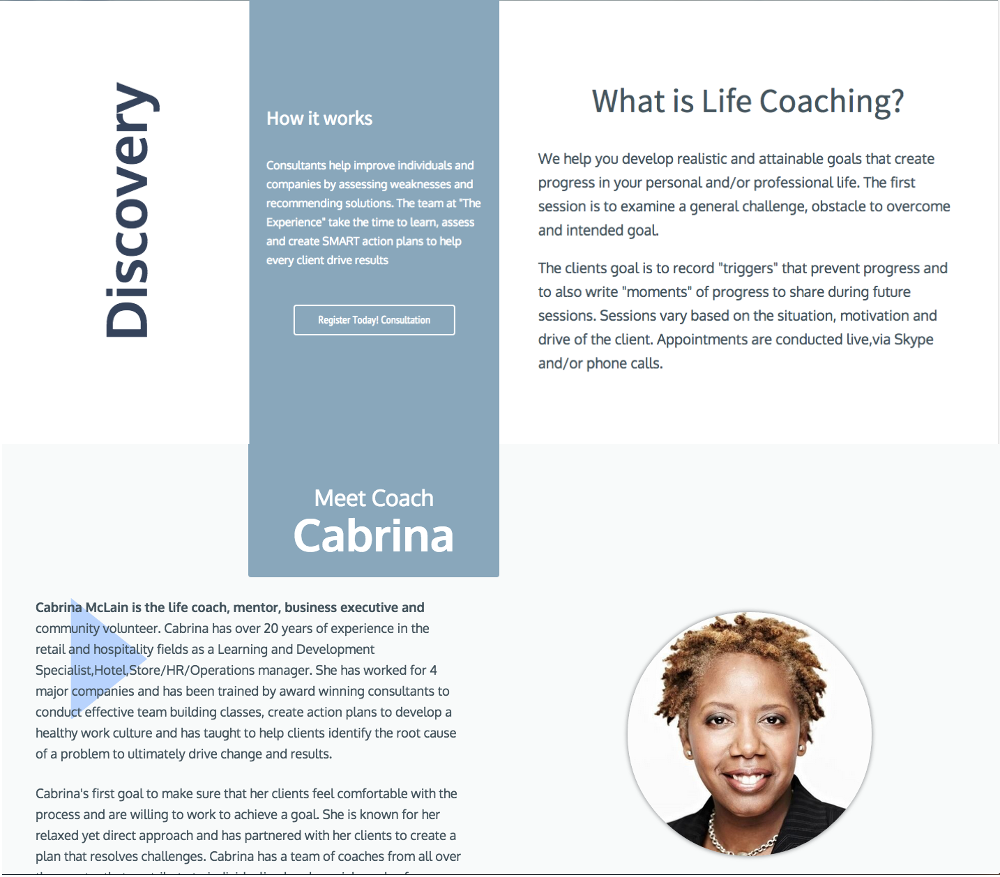

Cabrina, founder and operator of The Experience, was referred to me by my former boss, Brian Price, to work on a new website and brand image. About a year ago, Cabrina began life coach consulting as a side job, and her client base grew so much that she decided to transition into a full time consultant. This presented a great design and development opportunity, as well as an ideal partnership, since she and I were both working toward transitioning our careers.
developed and deployed using: HTML, CSS, Javascript/Jquery, Brackets text editor, Sketch, Illustrator, Go-Daddy hosting, and Git Hub.
Discover and Define
Starting with a phone conversation, I began by getting to know Cabrina, learning about her background and finding out what inspires her. As she explained to me, life coaching is very up close and personal, so it made sense to learn about her personality. I also learned about her needs and desired outcomes1 of the new website, as well as things she did not want2. We also discussed her target customers3 at length and business model for gaining new customers, which is primarily through 1) referrals of past customers and 2) sending out promotional emails about her service and links to the website.
1client needs
- Relaxing and holistic styling
- Modern site layout
- Simplicity throughout
- Logo
2things to avoid
- Feel too clinical or medical
- Too much written content
3customer personas
pauline is a stay at home mother and community volunteer who is constantly feeling overwhelmed. She enjoys her volunteer work, but is finding her personal life very unfulfilling. Having just turned forty, she feels like she is having a midlife crisis and stuck in a rut. She tried going to a psychologist, but felt uncomfortable with the formalities, and she sought a more personalized service to help her move forward.
brian is a Marketing Director who juggles many responsibilities in that role, managing a team of sales professional, creating marketing content, and maintaining a budget. Amongst all of his responsibilities, he needs to conduct sales and management training sessions for his employees, but often finds it challenging to fit this in with his other duties. He needs help from a third party to assist with preparing training materials and conducting the trainings.
sherry is an Human Resource Director who has done well in her career, but over the last couple years hasn't changed positions or been promoted. She is frustrated about her stagnant career and is finding that her career stress has been affecting her family life negatively. Sherry is overwhelmed by the whole situation and is seeking assistance to find a better work life balance, while still moving forward into new opportunities in her career.
The client's previous site4 was a Wix template site that had six different pages outlining the services and company bio. I suggested to her that the written content stay short and concise for each service 1)state what the service does 2) what the customer can expect as an outcome, and 3) why they should sign up. In addition, I recommended and requested that she provide testimonials of past clients. She provided me the testimonials and content that she wanted; she preferred to do all editing, as she wanted to ensure is read “in her voice”.
4desktop landing page
Design and Develop
I began sketching layout ideas, envisioning a simple one page layout for easy navigating, reading, and a quick review. Ultimately, the sketches led to two promising layouts: 1)7a was a simple and clean layout that featured the content without distraction, intended for easy reading . The second7b was more ambitious in visual design including additional colors, vertical text, and additional layers emphasizing certain headers (layout brainstorming PDF: desktop and mobile version). Both were intriguing and I developed them in HTML/CSS to compare the designs in the browser.
7asketch idea

7a

7bsketch idea

Once developed, I became very attached to 7b, but was still unsure which one to move forward with. Deciding to shelf the decision between the two layouts, in the interim, I worked on the areas both designs shared in common: 1) the header, 2) logo, and 3) contact section. I wanted to ensure the landing page was warm, inviting, friendly, and humble, yet confident. Guided by my initial client interview with Cabrina, I brainstormed different header taglines8,. After working through a number of ideas, none of them were appropriate or indicative of the services offered, so I consolidated a list9 of what I didn’t like to have a clear vision of my direction. The final outcome10 was a statement of simplicity: “Let’s begin a Journey of Change” - “One session, one discovery, one goal at a time ”. The reasoning for this header was threefold - 1) it stated the intention of all the services which is “Change” 2) it stated the services to fulfill that objective, being “one session, one discovery, one goal at a time”, and 3) it mirrored the voice of Cabrina’s personality and the key objectives of her service.
8aheader interations
8b
9header iteration thougths
- The capitalized letters were not indicative of The Experience and services provided
- While ”Getting a hold of one life” was a key objective Cabrina talked about, it didn’t show the warmth of Cabrina’s personality
- The background image needed to be intriguing, but more subtle and less busy to better complement the message
10final outcome
In finding the right imagery for the site I was initially tempted to use photos of Cabrina with a client, but that was too business-like and had the connotation of therapy. A number of her clients are stay at home mothers, and having business-like photos pigeonholed the services to business consulting and sent the wrong message of her services overall. Reminding myself of the variety of different customer personas and the client need of holistic styling, I turned to nature. Nature offered pictures of warmth, serenity and help assemble a palette of calming colors.
"What colors should we choose to represent and illuminate information? A grand strategy is to use colors found in nature, especially those on the lighter side, such as blues and grays of sky and shadows"
-Edward Tufte
I Instead of having a dedicated section of personalized reviews, I incorporated them as section breaks11, which offered the design both: 1) imagery to reinforce the message, and 2) breathing room between the service description sections.
11testimonial section break
I had been sketching logo ideas throughout the process, but having been unsuccessful so far, I decided to write down exactly what I wanted the Logo11 to signify and then started over with a vision. With a new direction, I began sketching a lot of shapes, primarily triangles, with the idea of Maslow’s “Hierarchy of Needs” relating to Life Coaching. While I liked the concept, I ultimately decided not to use the triangular shape as a main focus, because its connotation insinuates moving up, rather than the emphasis on clients moving forward. This guided me to the final result12of a circular graphic that has a sense of motion, intertwined with another inner circle adding visual motion and signifying partnerships. The circular foundation included a square on the inside, which by connection to the circle forms subtle triangles, indicative of the structured progress toward change The Experience team offers.
12desired look of the logo
- Structure
- Fullfillment
- Partnership
- Sense of motion
13final logo design
Needing to finalize the layout, I reached out to friends and fellow designers to put both designs in front of them and learn about their thoughts and interpretations of the different designs. The first one14, was well received, but the second one15 had a number of reservations.
13user feedback
- ”Simple”
- ”Clean"
- ”To the point”
- "Easier to understand”
14auser feedback
- ”Visually nice, but less digestible”
- Confusion about Cabrina’s headerb location
- Confusion about the services graphic, as one appeared selected with the different colorc
14balternative design
14cdifferent color caused confusion - services section

Overall, it was clear that that while the second design was more visually intriguing, it was less likely to be read thoroughly - taking away from the key objective. Once again a great learning opportunity - just because it’s pretty doesn't mean anything if it’s not useful.
Deploy and Conclude
The project overall was a grand lesson in perspective - The client's perspective, my perspective, the personas and the real life user’s perspective. Everyone has different investments, objectives, and goals, which need to be carefully considered . In this project, my perspective was creating an ambitious design and, therefore, was initially drawn to a design that didn't fully meet the needs of the client. I learned the importance of objectively identifying the perspectives for all parties involved, setting aside my own motifs, and designing accordingly. The client's message was simple and clear, and in the end that’s the message that resonates in the final design.
lessons learned
- Don’t lose focus on the customer and user
- Don’t get too attached to a design
- The user opinion is the designers best tool; listen and learn.
Client Review
"I have had the chance to work with Kyle Mann. During our first interaction, he explained the purpose and outcome of the project and conversation. As the enhancements and revisions of my site progressed, he kept me involved, educated and informed. His attention to my needs was outstanding. His work is creative yet impactful. I would recommend him to anyone in need of a website."
-Cabrina McLain